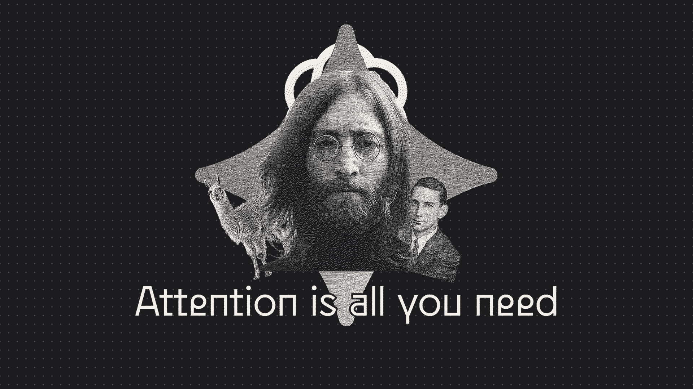

IA con criterio
Principios, modelos y prácticas de trabajo con IA
Contenido
Introducción
Introducción
1
El despegue
La expansión
La escala del momento
TikTok, 9 · Netflix, 42
El resto se reparte el 12%
El objetivo de este curso
La IA generativa es la herramienta del siglo XXI. La pregunta no es si la adoptaremos sino cómo y con qué consecuencias. Este curso ofrece un marco para usarla con criterio: entender qué es, qué puede hacer, qué no, y cuándo usarla.
Paradigmas
Paradigmas
2Pregunta
¿Cuál fue tu última interacción con una inteligencia artificial?
Uso de ChatGPT
¿Por qué sentimos la necesidad de distinguir la IA de un martillo (o, para el caso, una computadora)? Quizá nuestro ego no nos deja ver a la IA como solo una herramienta.
La IA generativa es una herramienta para producir lenguaje
Como el martillo es una herramienta para clavar. Como la hoja de cálculo es una herramienta para calcular. La diferencia es que su output se parece al nuestro —y eso nos confunde.
Inteligencia artificial generativa — definición de trabajo
La inteligencia artificial generativa es un conjunto de sistemas capaces de producir respuestas, inferencias o representaciones a partir de grandes volúmenes de datos, mediante modelos estadísticos y computacionales entrenados para identificar patrones, relaciones y regularidades.
Es una herramienta cognitiva que amplía las capacidades de manipular, transformar y generar información en múltiples lenguajes —texto, código, imágenes, estructuras matemáticas— sin comprender el significado de lo que produce.
Puede procesar enormes cantidades de datos, generar alternativas, traducir entre representaciones y reorganizar, pero no razona causalmente, no tiene criterio ético, reproduce sesgos de sus datos de entrenamiento y suele fallar en contextos desconocidos.
La IA generativa no es...
La IA generativa sí es...
Las discusiones sobre esta tecnología se aclaran enormemente cuando reemplazamos el término 'IA' con la palabra 'automatización'. Entonces podemos preguntar: ¿qué se está automatizando? ¿Quién lo automatiza y por qué? ¿Quién se beneficia? ¿Quién es afectado?
Las posibilidades reales
- Acelerar el trabajo cognitivo — tareas que tomaban horas se comprimen a minutos
- Democratizar capacidades técnicas — habilidades antes especializadas (programar, traducir, analizar datos) se vuelven más accesibles
- Reducir barreras de entrada — organizaciones pequeñas operan con capacidades antes exclusivas de las grandes
- Ampliar el espacio de exploración — generar múltiples alternativas rápido, probar ideas antes de comprometer recursos
Los riesgos reales
- Sesgos a escala — los modelos reproducen injusticias históricas con más velocidad y volumen
- Erosión de habilidades — delegar sin criterio atrofia la capacidad de hacer lo que se delegó
- Concentración de poder — la infraestructura que todos usamos está en manos de tres empresas privadas
- Impacto laboral asimétrico — ya están cayendo mercados de trabajo en escritura, traducción y código
- Dependencia sin comprensión — en sectores donde el rigor importa, los errores de la IA tienen costos reales
En síntesis...
IA generativa
IA generativa
3¿Qué es un chatbot?
Un chatbot de IA es una interfaz de conversación conectada a un modelo de lenguaje. Recibes texto, genera texto. Lo que parece una respuesta inteligente es una predicción del fragmento más probable dado lo que escribiste — no recupera información, la construye en tiempo real.
Un agente es un chatbot con herramientas: puede buscar en internet, ejecutar código, leer archivos. La diferencia no es de inteligencia sino de capacidad de acción. El mismo modelo subyacente, con más brazos.
Tanto chatbots como agentes hablan el mismo lenguaje tokens.
El lenguaje de la IA es el token
Pensar en tokens
- · Unidad mínima de procesamiento — no es una letra ni una palabra entera; es un fragmento frecuente del lenguaje
- · Multimodalidad — texto, imagen, audio y código se convierten en tokens; el modelo opera sobre todos igual
- · El modelo no ve tu mensaje como tú — ve la secuencia tokenizada, no el sentido
- · Ventana de contexto — límite de tokens que el modelo puede procesar a la vez; es su 'memoria de trabajo'
Pregunta
¿Por qué la IA a veces olvida datos?
Ventana de contexto
La ventana de contexto es el espacio total de tokens que el modelo puede procesar en una sola llamada. Todo lo que está fuera de la ventana no existe para el modelo. No es memoria permanente — es atención momentánea.
En 2026, los tamaños van de 128,000 tokens (GPT-4o, Grok 3, DeepSeek) a 1 millón (Claude Opus 4, Gemini 2.5 Pro) e incluso 10 millones (LLaMA 4 Scout). 128K tokens equivalen a unas 400 páginas — un libro completo.
Pero el número anunciado es engañoso. El sistema reserva espacio para instrucciones internas, herramientas, memorias y formato. Lo que queda para tu conversación siempre es menos de lo que dice la etiqueta. Y los modelos de razonamiento gastan tokens adicionales que no ves.
En síntesis
I.Contexto
Ingeniería de contexto
4Pregunta
Cuando le pides algo a la IA ¿qué sabe de ti?
Piensa en tu última conversación con una IA ¿Qué información tenía disponible?
Ingeniería de contexto
Ingeniería de contexto = diseño, estructuración y optimización de la información que se le da a una IA para garantizar resultados confiables, de alta calidad y conscientes del contexto
La mayoría de las personas solo piensan en el prompt. Sin embargo, el prompt es solo una pequeña parte del contexto.
Modelos contextuales
I.Contexto · El supermercado
El supermercado
Un espacio diseñado para ti
La plataforma construye un perfil tuyo con los datos que ya tiene: tu correo, tus archivos, tus búsquedas, tu calendario. Tú no hiciste nada; alguien diseñó el contexto por ti. Es cómodo, pero la disposición responde a lo que la empresa sabe de ti y sus intereses, no a lo que tú necesitas.
Gemini
Consejos
- Contextualiza en tus mensajes. Escribe un prompt con contexto o pide que te interrogue para comprender qué necesitas. En este modelo, más contexto siempre es mejor.
- Uso pragmático. Usa este modelo para preguntas informativas y sesiones rápidas. Si la plataforma tiene una ventana de contexto larga, puedes usar la conversación como tu caja contextual para temas específicos.
- Entrena a tu algoritmo. Toma en cuenta que todo lo que escribas lo usará la empresa para crear un perfil sobre ti y ese perfil podrá ser usado en productos de su ecosistema.
Un prompt para gobernarlos a todos
La IA asume lo que necesitas y responde. El resultado es genérico, a veces útil, pero diseñado para nadie en particular.
"Hazme preguntas hasta comprender claramente qué necesito." La IA interroga antes de actuar. El resultado responde a tu situación real, no a lo que el modelo supuso.
Los puntos ciegos del supermercado
- Incentivos desalineados. La empresa decidió qué datos usar y cómo priorizarlos. Sus incentivos (retención, datos, ecosistema) no son los tuyos
- Sin control del contexto. Correos irrelevantes, archivos viejos, búsquedas casuales. El contexto puede ser más ruido que señal
- Solo conoce una parte. Si tu trabajo está repartido entre varias plataformas, el supermercado solo conoce su propio ecosistema
I.Contexto · La plaza comercial
La plaza comercial
Cada tienda tiene su IA, pero no se hablan
La empresa puso IA dentro de tu procesador de texto, tu hoja de cálculo, tu correo, tus presentaciones. Cada local tiene su propio asistente con el contexto de esa aplicación — pero no sabe nada de los demás locales.
Gmail, Google Drive
I.Contexto · El estudio
El estudio
Toda tu información en un solo lugar
El estudio es lo que pasa cuando personalizas qué contexto tiene la IA. Instrucciones, proyectos, archivos relevantes, memoria curada. El nivel de personalización varía entre plataformas, pero la calidad de lo que la IA produce cambia radicalmente en todas.
El mismo modelo, distinto diseño
Memoria activada, todo acumulado sin orden. La IA recuerda que te gusta el café y que una vez preguntaste por especies de pingüinos. Contexto ruidoso, resultados genéricos.
Instrucciones claras sobre tu rol y tu trabajo. Proyectos separados por tema. Archivos relevantes. Memoria revisada. La IA responde como quien te conoce profesionalmente y/o personalmente.
ChatGPT
Diseñar un buen estudio
- 01Activa las memorias y revísalas periódicamente.
- 02Escribe instrucciones personalizadas y configura personalidad.
- 03Separa tu trabajo en proyectos.
- 04Una conversación = una tarea.
- 05Usa ramas de conversación, regeneración de output y edita tus instrucciones.
- 06Borra interacciones que no sean útiles.
- 07Usa el modo anónimo para conversaciones que no quieres que se guarden.
I.Contexto · El jardín
El jardín
Múltiples parcelas, cada una cultivada para su función
El jardín es contexto distribuido e intencional. Cada parcela tiene sus propias instrucciones, sus archivos, sus herramientas, sus límites.
Ejemplos de parcelas
- Desarrollo de sitio web. con la documentación del framework, el diseño, las instrucciones de estilo y los archivos del proyecto.
- Gestión financiera. — con las reglas contables, los formatos de factura y el historial de transacciones.
- Investigación. — con las fuentes, la metodología, los borradores y los criterios de calidad.
- Comunicación social. — con la guía de tono, las audiencias, los canales y los mensajes clave.
Claude Cowork
Cultivar un jardín
- 01Elige con cuidado. Los jardines implican trabajo, solo abre nuevas parcelas si estás dispuesto a mantenerlas y realmente hay beneficio.
- 02Define el contexto mínimo. Instrucciones, archivos clave, reglas... Es mejor empezar con poco e ir agregando solo lo indispensable.
- 03Itera. Lo que funciona se refina, lo que no se poda.
- 04Acepta la curva técnica. El jardín requiere más conocimiento, pero es mucho más poderoso.
CLAUDE.md — la tierra del jardín
Cada conversación empieza de cero. Repites quién eres, cómo trabajas, qué tono quieres, qué reglas aplican. El chatbot no tiene memoria de tus decisiones anteriores.
Un archivo de texto plano que Claude lee al abrir cualquier conversación. Tu nombre, tu rol, tus preferencias, tus reglas.
Skills: injertos para el jardín
Un skill es una carpeta con instrucciones y contexto que Claude puede invocar para tareas específicas — crear documentos, procesar datos, armar presentaciones. Actualmente son el mejor control para garantizar que la IA haga exactamente lo que necesitas en momentos concretos.
Ingeniería de contexto
MAIA
MARCO DE AUMENTO CON IA (MAIA)
5Las herramientas sirven para aumentar
Aumentar es expandir el espacio de problemas que puedes comprender y trabajar: situaciones complejas, relaciones difíciles de percibir, soluciones que antes no estaban disponibles.
Dos tipos de trabajo
Lo que requiere juicio
Trabajo cognitivo
Interpretar, decidir, formular. Depende del contexto y del criterio situado. No se delega sin pérdida.
Lo que requiere consistencia
Trabajo operativo
Ejecutar, registrar, repetir. El criterio ya está definido. Delegable cuando las reglas son claras.
La metacognición es la habilidad más importante al trabajar con IA.
¿Cuándo sí usar IA?
¿Cuándo no usar IA?
Los 5 modos de trabajo con IA
Modelos contextuales × modos MAIA
El techo de aumento
Cada modelo contextual tiene un techo: el modo de ejecución más alto al que puedes llegar de forma confiable. El supermercado te limita al modo 2. El jardín te habilita hasta el modo 3–4.
El techo no es una barrera arbitraria — es estructural. Sin contexto diseñado, la IA no tiene con qué ejecutar bajo tus criterios. Con contexto distribuido e intencional, puede operar con autonomía real.
La ingeniería de contexto es, entonces, la práctica de mover tu techo hacia arriba: diseñar la información que la IA necesita para aumentar tu trabajo, no solo responder tus preguntas.
Conclusiones
Conclusiones
6El jardín es una decisión política
Los otros modelos dependen de la infraestructura de una empresa: sus servidores, sus decisiones de producto, sus incentivos comerciales. Si la empresa cambia el precio, cierra una función o redirige su modelo de negocio, tu contexto se va con ella.
El jardín invierte esa relación. El contexto es tuyo: archivos locales, instrucciones que tú escribes, reglas que tú defines. Y cada parcela puede usar el modelo que necesita — uno potente para análisis complejos, uno ligero para tareas mecánicas, uno abierto para lo que no quieres que salga de tu máquina.
Una IA más comunitaria, menos concentrada y más responsable empieza por quién controla el contexto. El jardín no es solo el modelo más poderoso — es el más compatible con esa dirección.
El jardín ya no depende de nadie
El 31 de marzo de 2026, Anthropic filtró por accidente el código fuente completo de Claude Code — 500,000 líneas, 2,000 archivos, toda la arquitectura. En horas, miles de copias circulaban en GitHub. El resultado: la infraestructura para construir un jardín ya es replicable con cualquier modelo.
Modelos abiertos hoy
| Modelo | Quién | Perfil | Usos |
|---|---|---|---|
| Llama 4 | Meta | MoE, 17B activos. Scout: 10M tokens de contexto. | Análisis, redacción, razonamiento. |
| DeepSeek V4 | DeepSeek | ~1T params, 37B activos. 1M de contexto. MIT. | Código, ingeniería de software, contexto largo. |
| Qwen 3.5 | Alibaba | Multimodal nativo, 201 idiomas, 256K tokens. | Proyectos multilingües, análisis de imágenes y documentos. |
| GLM-5 | Zhipu AI | 744B total, 40B activos. MIT. | Razonamiento, matemáticas, código. Muy competitivo. |
| Mistral Small 4 | Mistral | 6B params activos. Corre en laptops. Apache 2.0. | Tareas rápidas locales: borradores, clasificación, resúmenes. |
| Phi-4 | Microsoft | 3.8B params, 128K contexto. | Lógica y matemáticas en dispositivos con recursos limitados. |
Trabajar con IA — Claude Cowork
- Un taller práctico para construir tu jardín desde cero: diseñar proyectos, escribir instrucciones, instalar skills, conectar herramientas.
- Duración: 4 horas · Precio: $800 MXN · Fecha: por confirmar
- Graduados de fundamenteos: Inscribete en los próximos 10 días y recibe un 20% de descuento.
¡Gracias!
Armando Sobrino
Mi diagrama